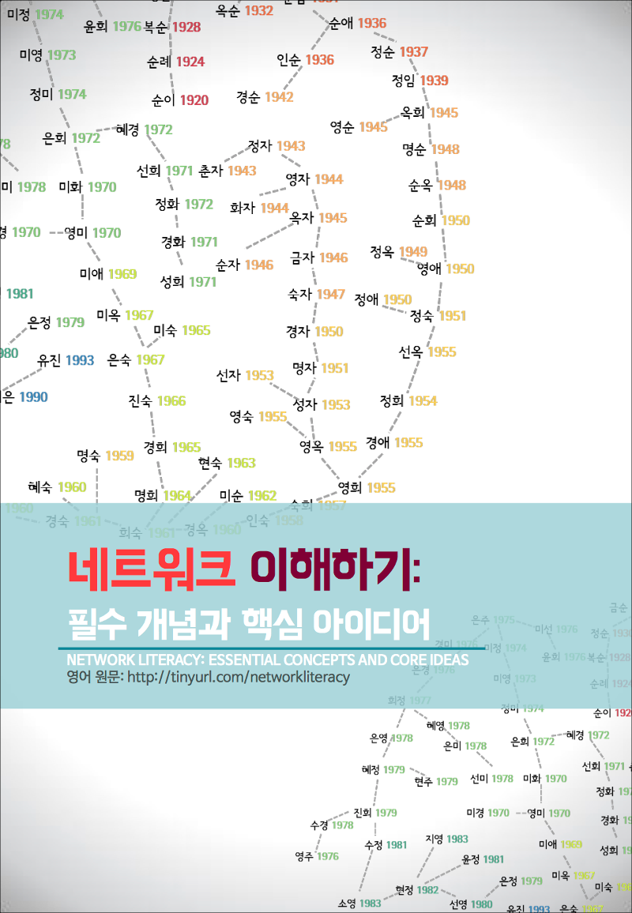

Skip to content
Network Science Lab @ GNU
Home
Principal Investigator
Members
Publication List
Research Talks & Lecture
Press Release
Network Literacy Project
MEEting
부경상회
Network Literacy Project
네트워크 이해하기 프로젝트
공식
(영문)
웹사이트:
NETWORK LITERACY: ESSENTIAL CONCEPTS AND CORE IDEAS
한국어판
(PDF 파일)
번역:
이상훈
,
이미진
디자인:
이미진
